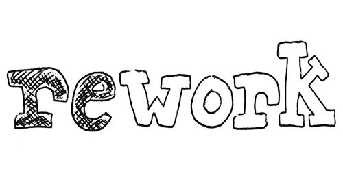

JSDOM для эмуляции работы браузераPostCSS для парсинга CSSnpm install uncss
const uncss = require('uncss');
const files = ['index.html', 'https://google.com'];
uncss(files, function (error, clearCSS) {
console.log(clearCSS);
});
CSS, добавленный на JSJSDOM, не требует запуска браузераonloadDOMCheerio для работы с DOMCSSOM для парсинга CSSnpm install ucss
UnCSS
<script src="helium.js"></script>
<script type="text/javascript">
window.addEventListener('load', function(){
helium.init();
}, false);
</script>

How do we go about identifying this dead code? Tools like uncss, although very powerful, don’t quite fit the bill. What we need is an almost RUM-like solution—how can we see what code users actually see on-screen on a live site?

.some .selector {
background-image: url('/img/dead/some_selector.gif');
color: red;
padding: 0;
}
|  | ||
| Rework CSS parser | CSSTree | PostCSS |
const parser = require('css')
...
var { stylesheet: { rules } } = parser.parse(cssString)
walker(rules, (filtered) => {
...
}, walker);
const csstree = require('css-tree');
...
var ast = csstree.parse(cssString);
csstree.walk(ast, function(node) {
...
});
//csstree.generate(ast)
const postcss = require('postcss');
const proc = postcss((ast) => {
ast.walkRules(/^\D/, (rule) => {
let { selector } = rule;
...
});
}).process(cssString).then(result => {...});
sitemap
ast.walkRules(/^\D/, (rule) => {
let { selector } = rule;
selector = selector.replace(/\n/g, '');
selectors.push(...selector.split(','));
});
[
".rightcol-profile .button-cancel",
".cart-step-3 .prb span",
"#block-analogues-popup .prb span",
".cart-step-3 .prb.old::after",
...
]
Echo Park 8-bit sustainable umami deep v Kickstarter. DIY cliche typewriter brunch, Odd Future sriracha pickled aesthetic. Farm-to-table bespoke fingerstache, kale chips umami brunch letterpress.
Whatever authentic disrupt, you probably haven’t heard of them direct trade mlkshk Etsy. Gluten-free roof party plaid four loko quinoa.
Echo Park 8-bit sustainable umami deep v Kickstarter.
Retro meh brunch aesthetic Cosby sweater Shoreditch. Banksy Tumblr sriracha, flexitarian pug chia master cleanse vinyl wayfarers fanny pack bespoke Helvetica roof party. Messenger bag retro cred Portland next level. Yr stumptown Schlitz Carles deep v small batch. Hella sustainable messenger bag, leggings skateboard literally1 bicycle rights H20 mumblecore banh mi DIY VHS. Semiotics four loko street art asymmetrical.
Retro meh brunch aesthetic Cosby sweater Shoreditch. Banksy Tumblr sriracha, flexitarian pug chia master cleanse vinyl wayfarers fanny pack bespoke Helvetica roof party. Messenger bag retro cred Portland next level. Yr stumptown Schlitz Carles deep v small batch. Hella sustainable messenger bag, leggings skateboard literally1 bicycle rights H20 mumblecore banh mi DIY VHS. Semiotics four loko street art asymmetrical. Asymmetrical <paleo> you probably haven’t heard of.
Flannel bicycle rights locavore selfies skateboard. Authentic fanny pack paleo four loko bespoke. Artisan tattooed chia XOXO ennui, lomo disrupt 8-bit art party Tumblr scenester.
Post-ironic fashion axe flexitarian, Tonx narwhal messenger bag Tumblr. Portland gentrify deep v kale chips literally.
Echo Park 8-bit sustainable umami deep v Kickstarter. DIY cliche typewriter brunch, Odd Future sriracha pickled aesthetic. Farm-to-table bespoke fingerstache, kale chips umami brunch.
American Apparel letterpress. Whatever authentic disrupt, you probably haven’t heard of them direct trade mlkshk Etsy. Gluten-free roof party plaid American Apparel four loko quinoa.
| Gentrify | Twee | Artisan | Banksy |
|---|---|---|---|
| Messenger | Mixtape | Small batch | Bicycle rights |
| Meggings | Freegan | Retro biodiesel | Slow-carb |
| Vegan | Occupy | Normcore | Put a bird on it |
| Next level | Selfies | Sustainable | Organic |
| Umami | Asymmetrical | Keytar | Craft beer |
| Biodiesel | Haven’t heard | Skateboard | Farm-to-table |
| Gentrify | Twee | Artisan | Banksy |
|---|---|---|---|
| Messenger | Mixtape | Small batch | Bicycle rights |
| Meggings | Freegan | Retro biodiesel | Slow-carb |
| Vegan | Occupy | Normcore | Put a bird on it |
| Next level | Selfies | Sustainable | Organic |
| Umami | Asymmetrical | Keytar | Craft beer |
| Biodiesel | Haven’t heard | Skateboard | Farm-to-table |
<html lang="en">
<head> <!--Comment-->
<title>Shower</title>
<meta charset="UTF-8">
<link rel="stylesheet" href="screen.css">
<script src="script.js"></script>
</head>
<html lang="en">
<head> <!--Comment-->
<title>Shower</title>
<meta charset="UTF-8">
<link rel="stylesheet" href="screen.css">
<script src="script.js"></script>
</head>
<html lang="en">
<head> <!--Comment-->
<title>Shower</title>
<meta charset="UTF-8">
<link rel="stylesheet" href="screen.css">
<script src="script.js"></script>
</head>
<html lang="en">
<head> <!--Comment-->
<title>Shower</title>
<meta charset="UTF-8">
<link rel="stylesheet" href="screen.css">
<script src="script.js"></script>
</head>
<html lang="en">
<head> <!--Comment-->
<title>Shower</title>
<meta charset="UTF-8">
<link rel="stylesheet" href="screen.css">
<script src="script.js"></script>
</head>


Before they sold out master